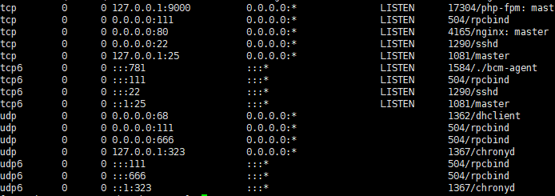

1.首先安装依赖包:
yum install libxml2 libxml2-devel openssl openssl-devel bzip2 bzip2-devel libcurl libcurl-devel libjpeg libjpeg-devel libpng libpng-devel freetype freetype-devel gmp gmp-devel libmcrypt libmcrypt-devel readline readline-devel libxslt libxslt-devel zlib zlib-devel glibc glibc-devel glib2 glib2-devel ncurses curl gdbm-devel db4-devel libXpm-devel libX11-devel gd-devel gmp-devel expat-devel xmlrpc-c xmlrpc-c-devel libicu-devel libmcrypt-devel libmemcached-devel 2.下载PHP压缩包并解压:
wget http://php.net/distributions/php-7.1.0.tar.gz
tar -zxvf php-7.1.0.tar.gz
cd php-7.1.03.编译安装,编译的时候可能会出现各种报错情况,下一篇主要写编译是常见的错误及解决办法:
./configure \
--prefix=/usr/local/php \
--with-config-file-path=/etc \
--enable-fpm \
--enable-inline-optimization \
--disable-debug \
--disable-rpath \
--enable-shared \
--enable-soap \
--with-libxml-dir \
--with-xmlrpc \
--with-openssl \
--with-mcrypt \
--with-mhash \
--with-pcre-regex \
--with-sqlite3 \
--with-zlib \
--enable-bcmath \
--with-iconv \
--with-bz2 \
--enable-calendar \
--with-curl \
--with-cdb \
--enable-dom \
--enable-exif \
--enable-fileinfo \
--enable-filter \
--with-pcre-dir \
--enable-ftp \
--with-gd \
--with-openssl-dir \
--with-jpeg-dir \
--with-png-dir \
--with-zlib-dir \
--with-freetype-dir \
--enable-gd-native-ttf \
--enable-gd-jis-conv \
--with-gettext \
--with-gmp \
--with-mhash \
--enable-json \
--enable-mbstring \
--enable-mbregex \
--enable-mbregex-backtrack \
--with-libmbfl \
--with-onig \
--enable-pdo \
--with-mysqli=mysqlnd \
--with-pdo-mysql=mysqlnd \
--with-zlib-dir \
--with-pdo-sqlite \
--with-readline \
--enable-session \
--enable-shmop \
--enable-simplexml \
--enable-sockets \
--enable-sysvmsg \
--enable-sysvsem \
--enable-sysvshm \
--enable-wddx \
--with-libxml-dir \
--with-xsl \
--enable-zip \
--enable-mysqlnd-compression-support \
--with-pear \
--enable-opcache4.编译成功后安装:
make && make install5.安装成功后配置环境变量:
为了使用方便，可以在 /etc/profile文件末尾添加php环境变量 ：
PATH=$PATH:/usr/local/php/bin
export PATH 保存后刷新环境变量:
source /etc/profile #更新查看环境变量：
echo $PATH看到php环境变量的路径后，以后就可以直接使用php命令了，查看php版本：
php -v6.现在的PHP没有.ini文件和配置文件,还需要配置PHP-FPM:
cp php.ini-production /etc/php.ini
cp /usr/local/php/etc/php-fpm.conf.default /usr/local/php/etc/php-fpm.conf
cp /usr/local/php/etc/php-fpm.d/www.conf.default /usr/local/php/etc/php-fpm.d/www.conf
cp sapi/fpm/init.d.php-fpm /etc/init.d/php-fpm
chmod +x /etc/init.d/php-fpmphp-fpm的启动、停止和重启:
service php-fpm start #启动service php-fpm stop #停止service php-fpm restart #重启